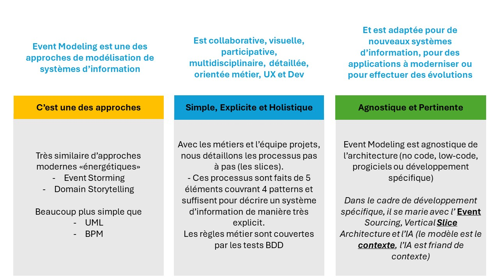
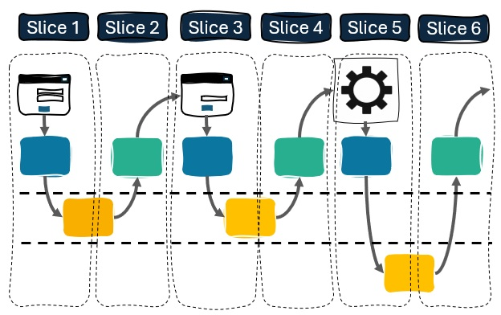
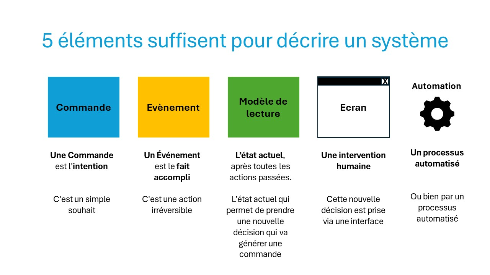
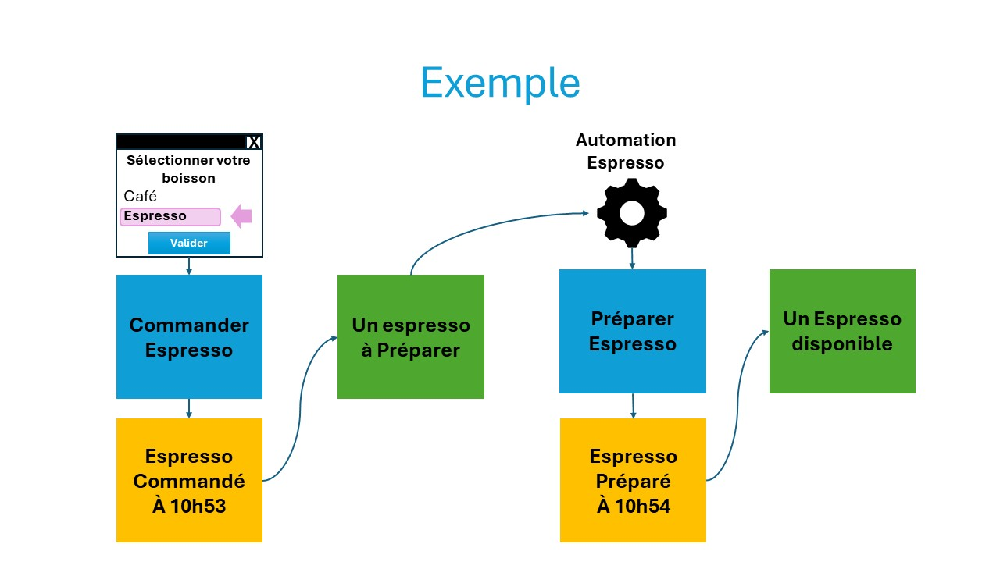

Bienvenue sur le site Event Modeling en Français
Event modeling créé par Adam Dymitruk et évangilisé par Martin Dilger
Event Modeling permet collaborativement avec les métiers et les équipes projet de modéliser un système d'information
L'objectif de ce site est de vous aider dans votre chemin vers Event Sourcing et Event Modeling
Event Modeling (EM) est une approche de modélisation d'un système d'information (au sens large) qui se bâtit processus par processus (processu ou chapître)

- La toute première activité est un storming autour des évènements métier
- Puis un premier processus est choisi: un processus en EM est une succession d'étapes atomiques (pas à pas) ne prenant qu'une seule direction pour atteindre l'étape finale du processus choisi (focus!)
- Contrairement à BPMN, un processus EM n'a pas de branchement (si... alors... sinon...)
- Un processus EM est fait de 4 patterns: changement d'état, vue de l'état, automatisation et traduction
- Chaque étape est appelée slice (tranche). Une slice est petite, livrable, testable et apporte de la valeur métier
- Une slice est toujours une user story et couvre les 3C: Carte, Conversations, Confirmation (car on ajoute les GWT tests ou tests BDD)
- Ensuite on itère par processus
Les forces de l'EM vont au-delà du modèle et grâce au modèle :
- Permet une implémentation utilisant Event Sourcing (CQRS) et Vertical Slice Architecture
- Permet une gestion de projet simple: l'unité de mesure devient la slice
- Permet une documentation vivante
- Permet d'utiliser le pattern "Vertical Slice Architecture" pour l'implémentation
Et en bonus, car l'EM donne beaucoup de contexte, riche, explicite et détaillée, l'IA est extrêmement efficiente.
Premier Modèle
Une modèle très simple pour présenter l'idée d'Event Modeling: commander votre espresso avec une machine automatique
 Contact
christophe.lecoent@eventmodeling.ch